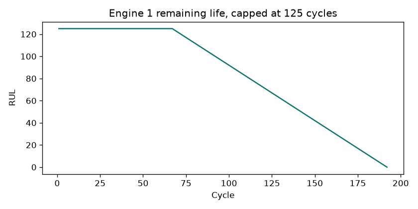
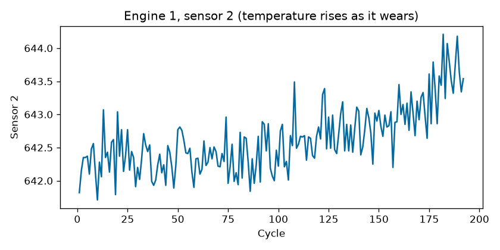

Building a Predictive Maintenance System for Attack Helicopters with Public Data
I wanted a project that looked like a health and usage monitoring system for an attack helicopter, and I wanted to be able to show the code. Those two wishes fight each other. A real AH-64 tape is not a GitHub repo. So I built the shape of the system on public data, and I wrote down every place the proxy stops being fair.
This is not affiliated with the U.S. Army, Boeing, or Airbus. It does not use military, controlled, or classified data. The twelve tail numbers in the dashboard are POC-01 through POC-12. I made them up. Nothing on the screen is a release to fly.
Why remaining life matters on a rotorcraft
A helicopter earns its keep in hours, and it spends those hours shaking. The engine, the gearbox, and the rotor do not fail at a calendar date. They drift. A fixed inspection interval is a bet that every aircraft wears at the average rate. Some wear faster. Some are still healthy when the interval says to open them up. A health and usage monitoring system exists to notice the difference.
The dangerous mistake is not the early pull. An early pull wastes a slot in the hangar. The dangerous mistake is the late call: the screen says the engine has life left, and the engine does not. Any score that treats those two mistakes as equal is the wrong score for this job. I used the NASA asymmetric score for that reason. A late remaining-life error is charged on a steeper exponential than an early one. Root-mean-square error is in the table so a reader can see it. It did not pick the winner.
Why I did not ask for a real tape
I could have described a system and left the data as a comment. That is a slide, not a project. I could have asked for operational vibration. That is a clearance problem, and it would have made the repository a liability. I used two public files and said what each one is.
NASA C-MAPSS is a turbofan simulator. Four subsets, FD001 through FD004, engines run until a modeled failure. I used it as a proxy for turboshaft degradation because a compressor, a combustor, and a turbine wear in ways a temperature and a speed can see, and because no public turboshaft run-to-failure file exists. It is not a T700. It has no rotor, no mast, and no gearbox. A cycle in that file is not a helicopter flight hour. I would not brief this model as an Apache engine prognosis. I would brief it as the public exam the rest of the field already uses, with the proxy limits in the data note.
The vibration file is the Airbus helicopter accelerometer set released with a 2020 methods paper and held at ETH Zurich. One-minute traces at 1024 Hz, healthy flights for training, a labeled validation set for the exam. The license is CC BY-NC-SA 4.0. I can share the analysis if I attribute it and do not sell it. I did not commit the raw HDF5. The traces are also scaled, so the absolute level is meaningless, and the label is abnormal sensor behavior, not a named crack.
N-CMAPSS, the newer simulator, was not a stable anonymous download. I did not block the project on a request. The classic files are the ones a reader can fetch with one script.
What the engine table actually looks like
Each row is one cycle of one engine. Three throttle settings, twenty-one sensors, no header in the file. Training engines are run until failure, so the last cycle is remaining life zero. I capped remaining life at 125 cycles. Early in life the sensors have not moved, and asking a model to tell 200 cycles from 300 is asking it to memorize which engine it is looking at. The cap says "at least 125, until the wear is visible." That value is the one the Saxena papers made comparable. I did not invent a rounder number to look original.

Six sensors in FD001 never change. I dropped them because a constant column cannot predict anything and because it breaks scaling. The drop is computed from the training file. FD002 and FD004, which mix six operating conditions, had no constant sensors. I did not copy a blog's drop list onto those files.

FD002 and FD004 are the reminder that a sensor value is only high relative to the regime it was measured in. I scaled each regime separately, using the training mean and spread of that regime. Rounding the three settings was enough to separate the regimes. A clustering model would also work. Rounding does not need to be fit, so training and serving cannot disagree about which regime a row belongs to.
The modeling journey, including the losses
I trained a line, a random forest, LightGBM, and XGBoost on rolling-window features: the latest sensors, plus the mean and spread over the last five cycles of that same engine. The group-by-engine step matters. Without it, engine 2's first cycle would include engine 1's failure, and the score would be a lie.
On the FD001 last-cycle exam the forest won. Root-mean-square error 21.3 cycles, mean absolute error 15.1, NASA score 986. LightGBM was 1450. XGBoost was 1430. The linear model was 43833. Its root-mean-square error was 38, which a careless table would call "somewhat worse." The NASA score shows the late calls. That is the number I trust.
I gave LightGBM eight Optuna trials. The best trial scored 1166. Better than the default LightGBM, still worse than the forest. I did not change the selection rule after seeing the search. The rule was written first: lowest FD001 NASA score.
I also trained a small LSTM and a small 1D convolutional net on the last 30 cycles. Six epochs, CPU, no drama. They lost. The LSTM's root-mean-square error was 59. The CNN's NASA score was worse than the linear model. I am not going to call that a tuning issue I almost fixed. On this budget, the forest is the model. A longer run might close the gap. This run did not show it, and the evaluation file says so in the same table as the winner.
FD003 is the subset where LightGBM and XGBoost beat the forest. I did not switch winners after seeing that. Mixing subsets into the selection would let a model win by being lucky on an easier file. FD001 was the exam I named first.
Vibration, and the misses
A minute at 1024 Hz is 61,440 samples. I did not feed that vector to a model. I cut it into one-second windows and kept the summaries a HUMS screen already shows: root-mean-square, crest factor, kurtosis, and the share of FFT energy in broad bands. I did not use a narrow "once per rev" bin. I do not know the rotor speed of each Airbus flight, and a narrow bin would have been a guess.
Isolation forest, a one-class SVM, and an autoencoder all trained on healthy flights only. The autoencoder's score is how badly it fails to rebuild a summary. A summary it cannot rebuild is treated as abnormal. That is a reasonable idea. It was not the best idea on this file.
The validation set has 297 abnormal sequences. The SVM missed 49 of them. Precision 0.86, recall 0.84, F1 0.85, ROC-AUC 0.93. The autoencoder missed 96. The forest missed 93. I kept the SVM. A higher F1 with a hidden miss count would have been the wrong sentence. The miss count is the sentence.
The cutoff is the 98th percentile of healthy training scores, so about two percent of healthy flights alarm. That is a demonstration threshold. An operator would move it after deciding what a false alarm costs.
From a number to an action
A point estimate is the average guess. I also fit LightGBM at the 10th and 90th percentiles. On the FD001 exam, 84 percent of the true remaining-life values landed inside that interval. A perfect 10-90 interval would cover 80 percent. The interval is slightly conservative. The policy uses the low end.
If the cautious remaining life is under 15 cycles, the screen says ground. Under 40, it says schedule maintenance. Otherwise it says inspect on the normal cycle. Those cutoffs are in the settings file so they can be argued with. They are not a regulation. The API returns the same words, plus a line that says this is decision support and not an airworthiness release.
I simulated twelve fictional aircraft against a fixed pull every 80 cycles. The fixed policy had 6 unplanned failures. The cautious policy had 3, and it pulled early 8 times. Availability in that toy fleet moved from 0.50 to 0.75. The model bought fewer in-service failures by spending hangar slots. Twelve draws from a simulator exam are not a year of a squadron. I will not pretend they are.
What I would not claim in a room
I would not say the neural nets were close. They were not. I would not say the vibration model found bearing cracks. It found traces that did not look like the healthy training flights. I would not leave an Azure online endpoint running to decorate the README. This subscription disables public access on storage accounts, so a laptop cannot upload a model file. An always-on machine is a bill, not a result.
What I would say is shorter. I refused operational data. I penalized late calls. A forest beat two sequence nets on the exam I named in advance. The vibration model I kept is the one that missed fewer abnormal traces, and I can tell you how many it still missed. The screen recommends an action from the cautious bound, and it says it is not a release to fly.
The code, the decision log, and the evaluation write-up are in the repository.